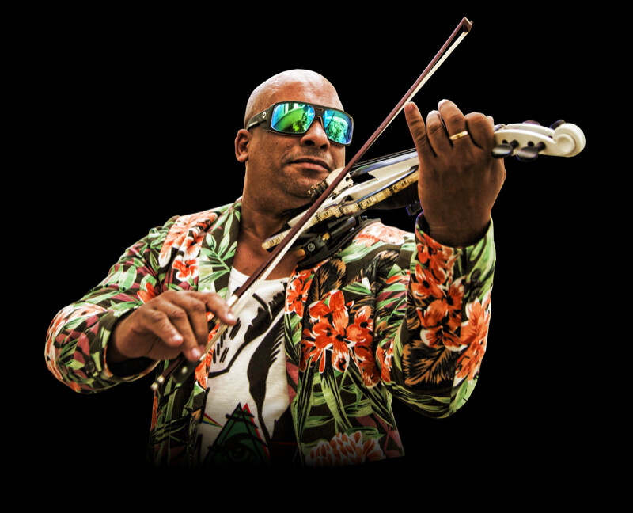
Where Classical
Meets Electronic
Julio Cuba is an electric violinist and music producer who fuses classical virtuosity with live house and electronic music. Part of the Nikki Beach group since 2005 (Marbella, Mallorca, Ibiza, St. Barth, St. Tropez and Bali) and a resident violinist in Dubai since 2021, he has performed alongside Beyoncé, Ne-Yo, David Guetta and Diana Ross.
From weddings and private yacht parties to large corporate galas, each performance is tailored to the occasion, from an intimate ceremony to a dance floor with a DJ. He is in Dubai for the 2026/27 season.
On Stage & Beyond
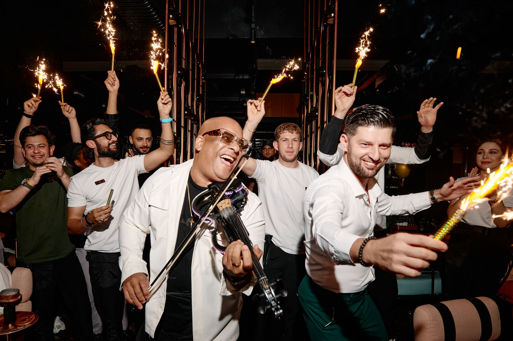
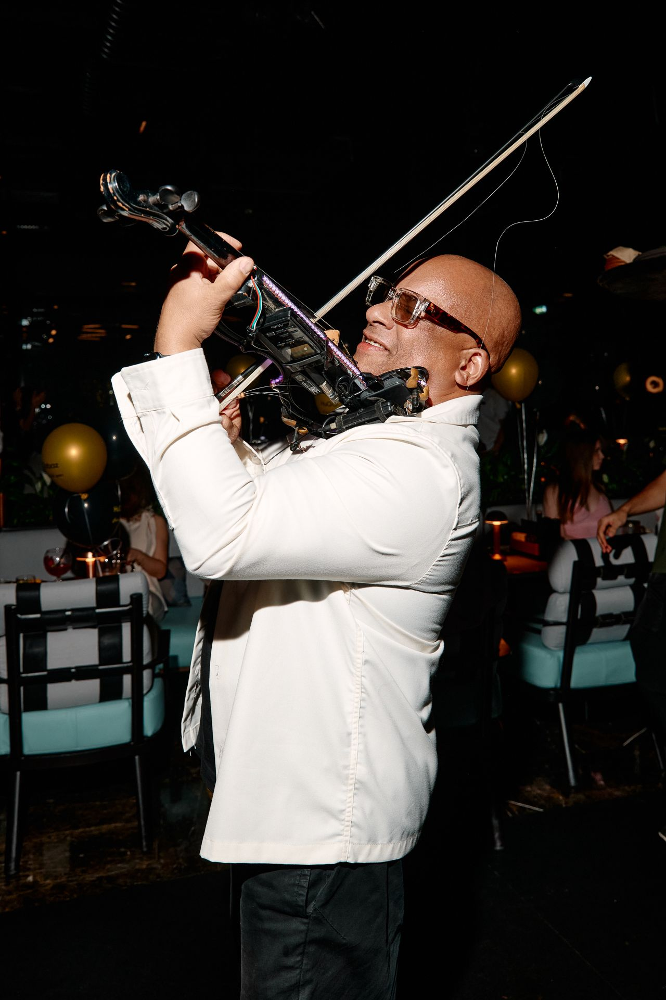
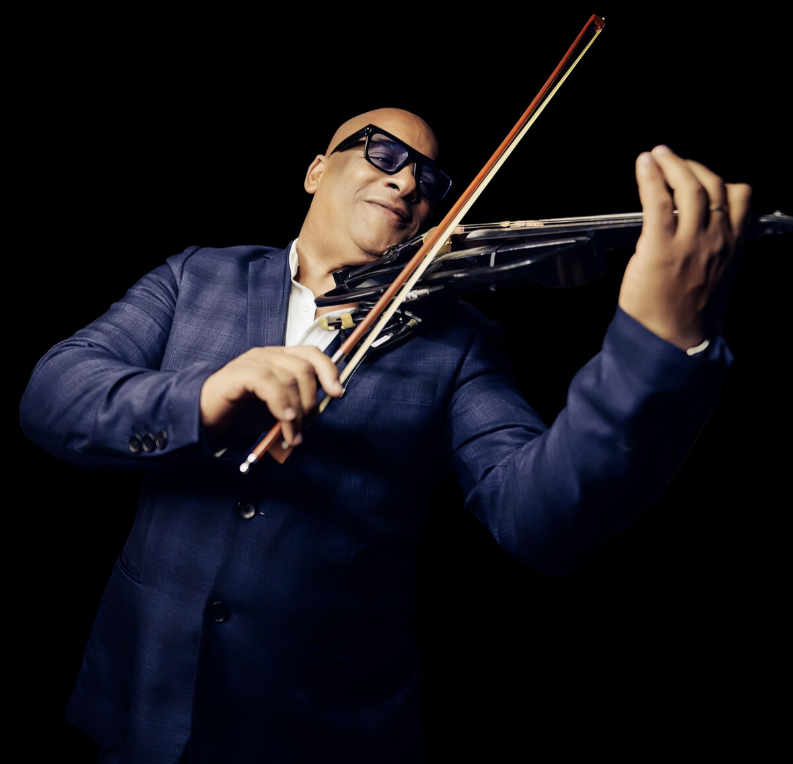
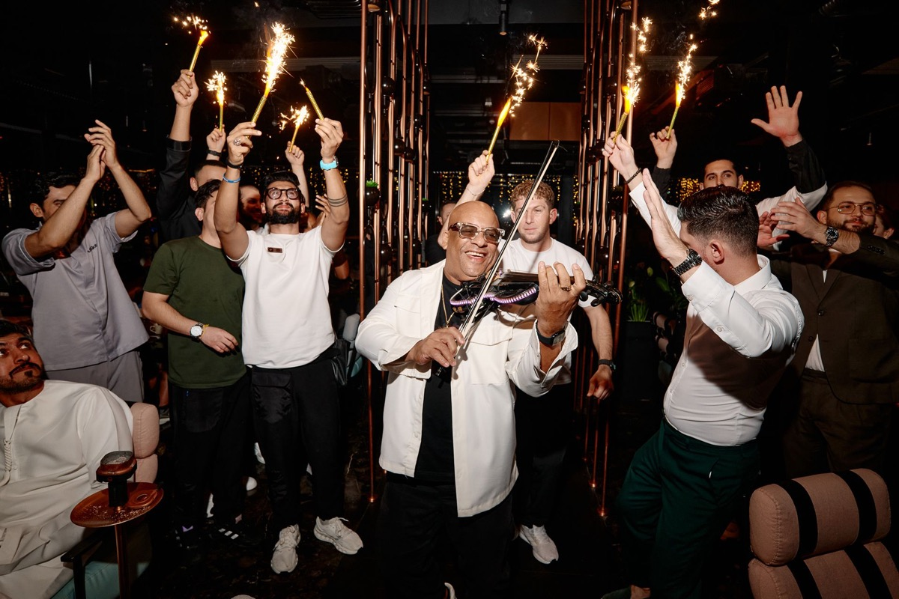
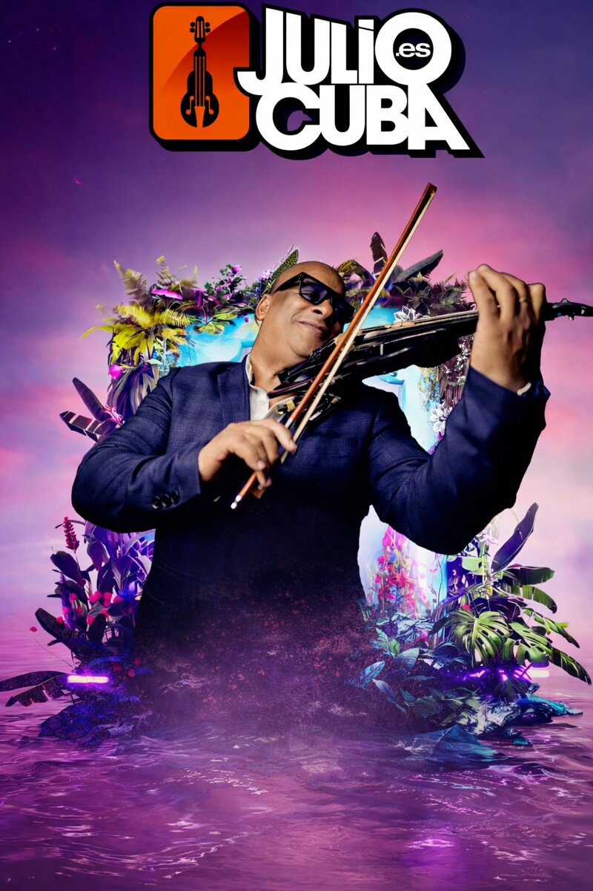
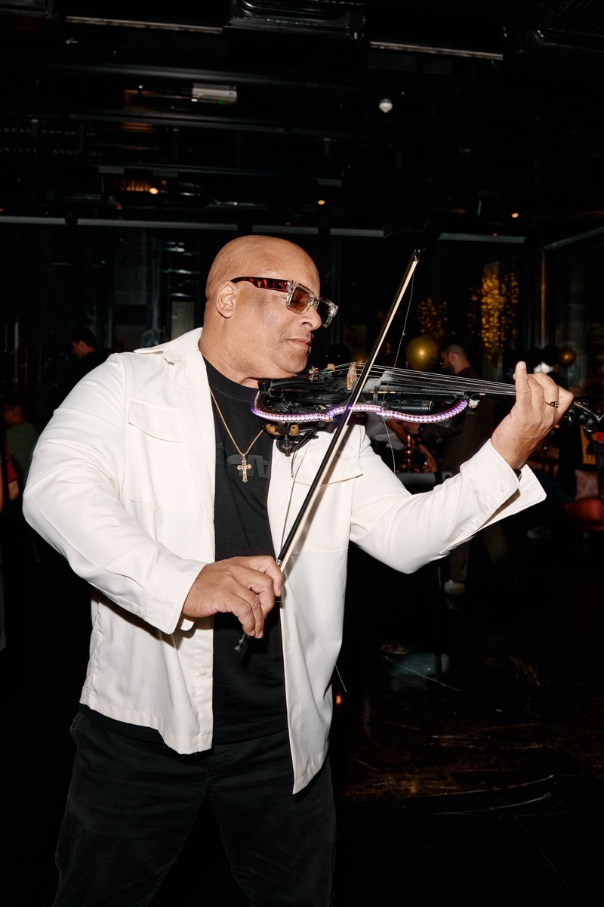
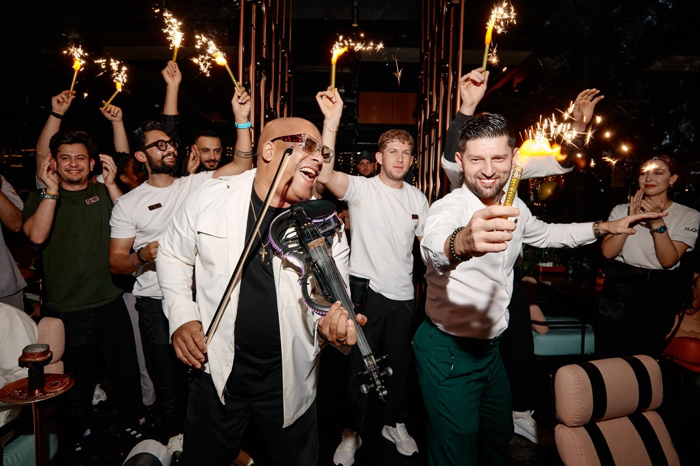
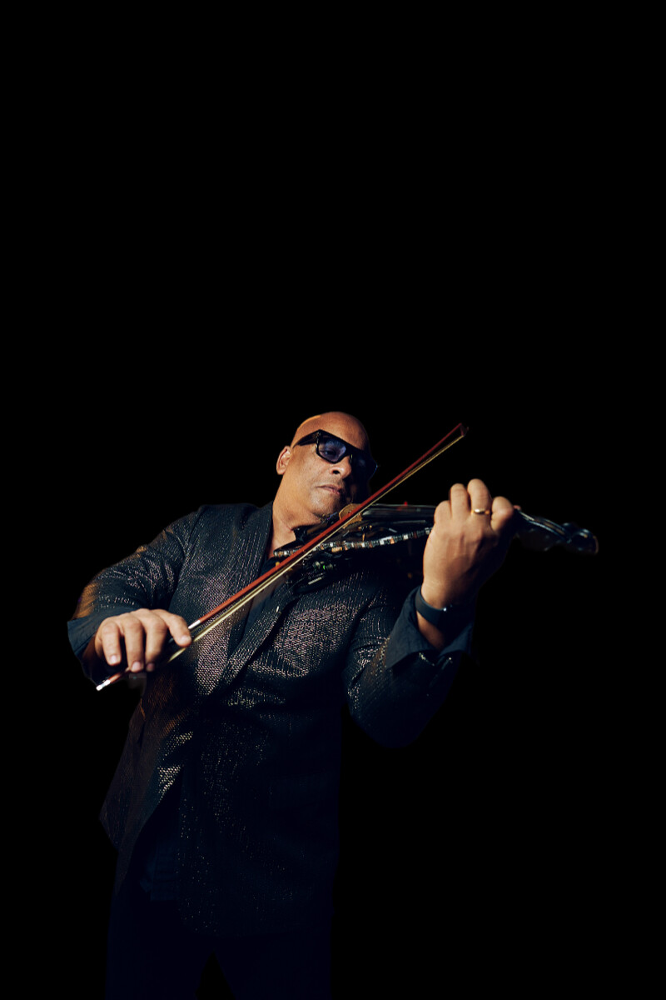
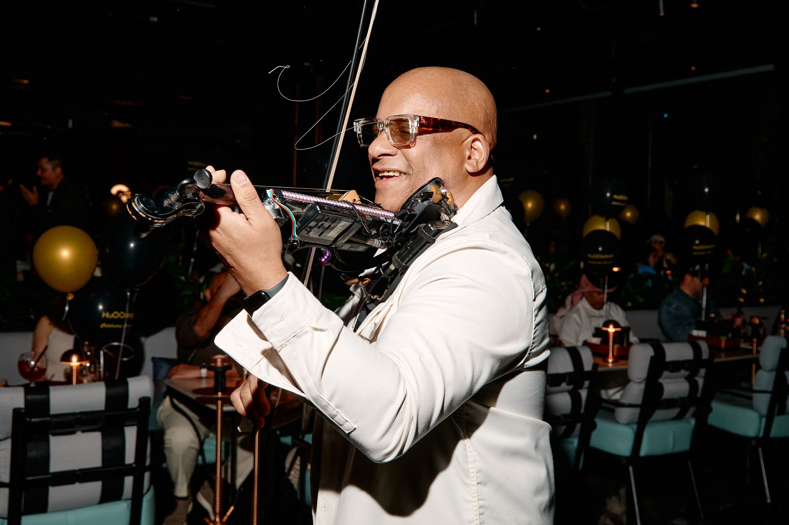
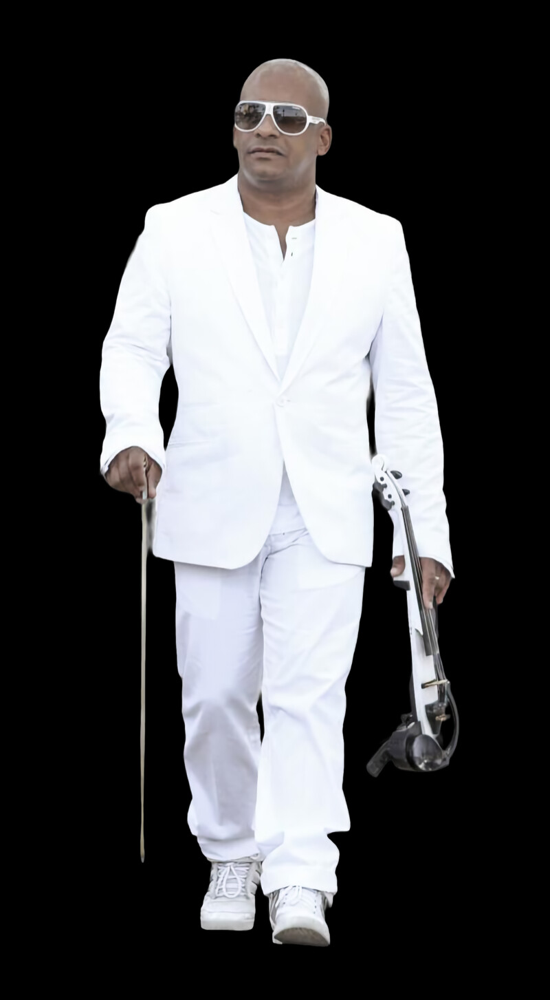
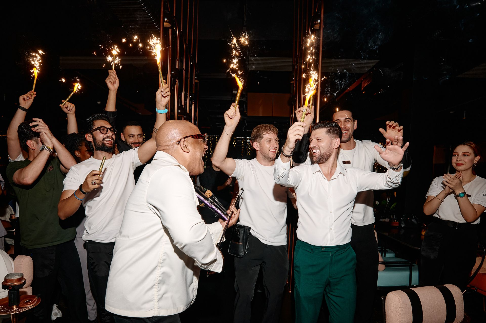
Crafted for Every Occasion
Every performance is tailored to match the tone, energy and aesthetic of your event.
Weddings
Live violin for ceremonies, receptions and first dances at wedding venues in Dubai, Marbella, Ibiza and across Europe.
Yacht Parties
Wireless electric violin for yacht parties and private charters, from Dubai Marina to the Mediterranean, solo or with a DJ.
Private Events
Birthdays, anniversaries and villa parties with a bespoke violin performance shaped around your guests.
House Music & DJ Sets
Electric violin played live over house music, alongside DJs at beach clubs, rooftops and nightclubs.
Corporate & Fashion
Gala dinners, product launches, brand activations and runway shows with a sophisticated live soundtrack.
Destination Events
Available for international bookings. From Dubai to Ibiza, London to Marbella, wherever the event takes place.
Media & Press
Download branding assets, logo animations, photos and the official press kit. Everything you need for flyers, promotions and event materials.
Official Press Kit
Biography, high-resolution photos, technical rider and booking information.
Frequently Asked Questions
Who is Julio Cuba?
Julio Cuba is an international electric violinist and music producer who started his career at the age of 7 in Cuba. He has been part of the Nikki Beach group since 2005, has been a resident violinist in Dubai since 2021, and has performed alongside Beyoncé, Ne-Yo, David Guetta and Diana Ross.
Can I book Julio Cuba as a wedding violinist in Dubai?
Yes. Julio Cuba performs at weddings in Dubai, Spain and across Europe, including ceremonies, cocktail receptions and parties. The repertoire can move from classical and pop during the ceremony to live violin with a DJ on the dance floor, and every performance is adapted to the couple.
Does Julio Cuba perform on yachts?
Yes. Julio Cuba performs at yacht parties and private charters, including in Dubai Marina. He brings his own wireless system, so he can move around the deck among guests, and he can play solo or alongside a DJ. Share the yacht, date and available sound equipment when you enquire.
Is Julio Cuba a house music violinist?
Yes. His signature style fuses live electric violin with house and electronic music, and he plays live over DJ sets at beach clubs and nightclubs. He also produces dance music with his long-time partner Gonzalo Shaggy Garcia and leads NBJC, a live concept built around house music hits.
Where has Julio Cuba performed in Dubai?
Julio Cuba has been a resident violinist in Dubai since 2021, with residencies at venues including Azure Beach, Aura Sky Pool, Drift Beach, Attiko, Buddha Bar and Huqqabaz Garden. He is in Dubai for the 2026/27 season and also accepts private bookings for weddings, yachts and events.
What private events does Julio Cuba play in Spain and Europe?
Julio Cuba plays weddings, birthdays, anniversaries, villa parties and corporate galas in Spain and across Europe. He has held residencies in Marbella, Mallorca, Ibiza and Barcelona, as well as in St. Tropez, and he is available for international bookings wherever the event takes place.
What does Julio Cuba need technically for a performance?
Julio Cuba brings his own microphone, wireless system and sound effects. The event provides a PA system suited to live music, a monitor, a stereo channel on the DJ mixer and, ideally, a stage riser of at least 2 by 2 metres. The full technical rider is in the press kit.
How do I book Julio Cuba and how much does he cost?
Book through his agency, Rasus Entertainment, at rasusentertainment@gmail.com, or by phone on +34 609 589 677 (Spain) or +971 585 077 632 (Dubai). Fees depend on the date, location and length of the performance, so send those details along with the type of event to receive a quote.
Last updated: November 2026
Let's Create Something Unforgettable
Available for luxury events, weddings and private performances across Dubai, Spain and Europe. Reach out to discuss your event.